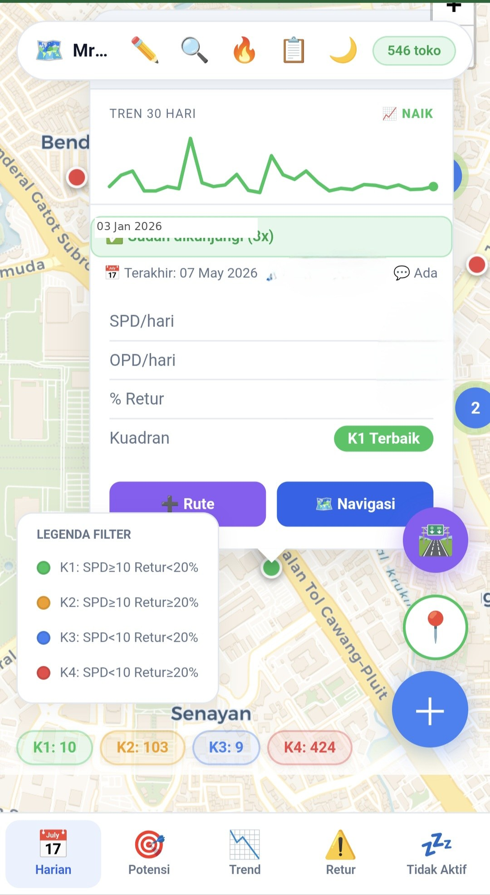

Store Visit Map & Planner
Supervisors compiled a store visit list every morning and sent it via WhatsApp — no route logic, no performance context. 10+ reps, 15–25 store visits each per week. Every visit planned on the map — route optimized, store performance visible. Route optimized via Held-Karp + real road distances, navigation handed off to Google Maps.
From WhatsApp Lists to Live Intelligence
Sales Were Navigating Blind
Every morning, supervisors WhatsApp’d a list of stores to each sales rep. Route planning was manual. Performance data sat in spreadsheets that couldn’t open on a phone.
Live in Daily Use
Mobile-first map opens directly in the browser. Store popup shows 30-day trend, visit history, performance quadrant, and one-tap route or navigation.

Screenshot uses dummy store data for confidentiality — UI layout, performance coloring, and route planner reflect the actual production build.
The Unusual Choices
Each architectural decision was made under a specific constraint. The constraint drove the solution — not the other way around.
watchPosition streams continuous GPS updates — the sales rep’s icon moves on the map as they drive, not just when they tap a button. getCurrentPosition would give a single snapshot. For in-field navigation, continuity matters more than battery.Five View Modes — One Dataset
Each mode calls a different FastAPI endpoint and applies different categorization logic. Switching clears old state and fetches fresh — no stale data carried between modes.
| Mode | Endpoint | Categorization Logic |
|---|---|---|
| Harian (Daily) | /peta/harian | 4 quadrants K1–K4 based on SPD ≥ 10 and return rate vs 20% threshold |
| Potensi (Potential) | /peta/potensi | Above / below branch average SPD |
| Trend | /peta/trend | Rising / Declining <20% / Declining ≥20% (period-over-period) |
| Retur (Returns) | /peta/retur | Return rate 20–50% / Return rate >50% |
| Tidak Aktif (Inactive) | /peta/nonaktif | 7–14 days / 15–30 days / >30 days without transaction |
What Makes It Work
/table, then runs Held-Karp TSP to find the mathematically optimal visit order. Two OSRM servers tried in sequence with a 9-second AbortController timeout each. If both are offline, falls back to Haversine straight-line distance. Result shared to WhatsApp or opened in Google Maps multi-stop.// dp[mask][last] = min cost visiting all // stores in `mask`, ending at node `last` var INF = 1e9, FULL = (1 << n) - 1; var dp = [], par = []; // Seed: single-store paths from origin for (var i = 1; i <= n; i++) dp[1 << (i-1)][i] = dist[0][i]; // Fill bitmask DP table for (var mask = 1; mask <= FULL; mask++) { for (var last = 1; last <= n; last++) { if (!(mask & (1 << (last-1)))) continue; for (var nxt = 1; nxt <= n; nxt++) { if (mask & (1 << (nxt-1))) continue; var nm = mask | (1 << (nxt-1)); var nd = dp[mask][last] + dist[last][nxt]; if (nd < dp[nm][nxt]) { dp[nm][nxt] = nd; par[nm][nxt] = last; // track path } } } } // Backtrack par[][] to reconstruct route
// For each store, cast a horizontal ray // Count polygon edge crossings // Odd count = point is inside polygon var insideData = displayData.filter(t => { var pt = [t.lon, t.lat], inside = false; for (var i = 0, j = poly.length-1; i < poly.length; j = i++) { var xi = poly[i][0], yi = poly[i][1]; var xj = poly[j][0], yj = poly[j][1]; var x = (xj-xi)*(pt[1]-yi)/(yj-yi)+xi; var hit = ((yi > pt[1]) != (yj > pt[1])) && (pt[0] < x); if (hit) inside = !inside; // flip } return inside; });
watchPosition — not a one-shot snapshot. From any store popup, one tap opens turn-by-turn navigation in Google Maps from the current live position./options endpoint dynamically, not hardcoded.End-to-End Data Flow
From SQL database to map pin — and from store tap to optimal route on Google Maps. Every layer explicit, including where the constraints show.
/options for dynamic filter dropdowns. Runs on an office PC server — no VPS.app.js and redistribute the HTML each morning./libs/ folder for offline support.ptops_lastdata_v1. If tunnel is unreachable (URL not updated, field connection lost), previous dataset renders from cache. Field ops continue without interruption.LS_KEY. Hard cap at 10: Held-Karp is O(n² × 2⊃n) — exponential. At 10 stores: milliseconds. At 20: would freeze the browser./table/v1/driving. Two servers tried in sequence with 9-second AbortController timeout each. Held-Karp bitmask DP runs on the duration matrix to find exact optimal order. Falls back to Haversine if both OSRM servers are offline./route/v1/driving fetches the actual road polyline and total distance. Rendered on map. Result exportable: WhatsApp text with Google Maps link, or direct Google Maps multi-stop URL.displayData via horizontal ray-casting: count edge crossings, odd = inside. Supports any convex or concave shape. Runs client-side in milliseconds on 6,500 points.navigator.geolocation.watchPosition. Sales rep icon updates on map as they drive. GPS coordinate fed as origin into Held-Karp. One tap from store popup opens Google Maps turn-by-turn from live position./options to narrow the product dropdown. Final filter applied client-side: branch, category, product, date range, shift, visit status. State cleared on mode switch to prevent cross-mode stale data.Honest Trade-offs
Every architectural shortcut here was a deliberate trade-off against constraint — non-technical ops team, zero IT budget, immediate deployment need.
app.js and redistribute the HTML file each morning. Acceptable for a small ops team; not scalable to hundreds of users.
Deliberately Minimal
No framework, no bundler, no build pipeline. Every dependency chosen to solve one specific problem.